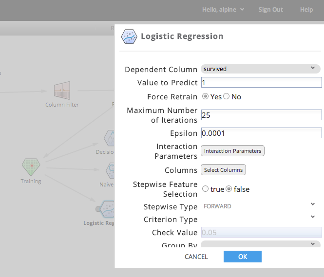

To edit an operator's properties, either select the operator and click 'Edit Operator' in the operator toolbar, double-click the operator, or right-click the operator and select 'Edit operator properties'.
The operator property dialog will display. The user can change the operator properties as desired. See Appendix A for more information configuring each operator.
